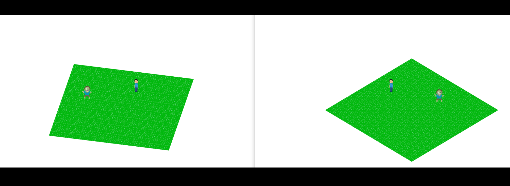
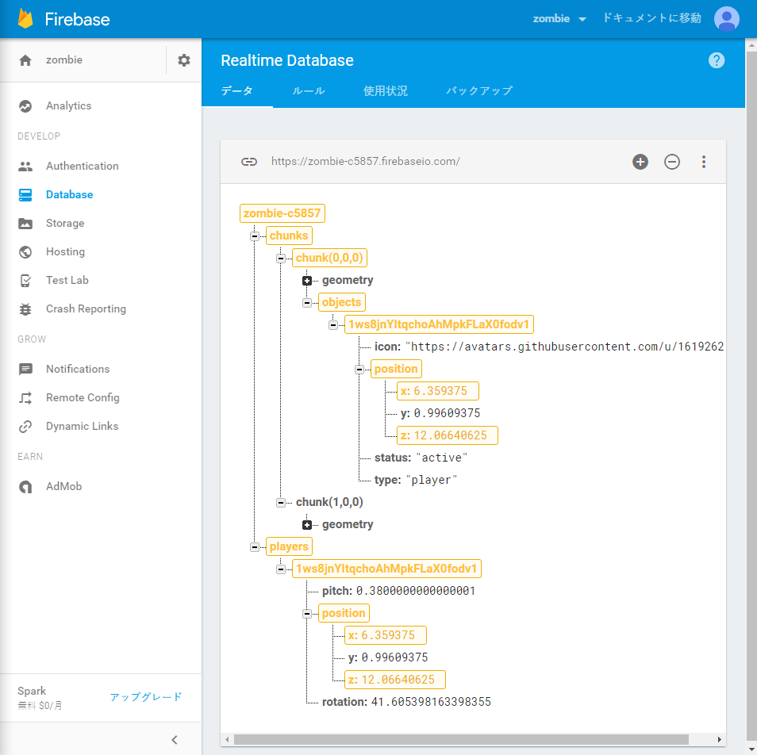

モナドのまほう 第３話『オンラインゲームになりました』
- 第二話 ←前回
つづきです。
🔥Firebase🔥で一気にオンラインゲームに！
そろそろオンラインゲームっぽくしたくなった(思いつき)ので、オンラインゲームっぽくしておきましょう。なおPureScriptのFirebaseのバインディングは他の人が書いたものがあったんですが、それが古くて動かなかったので、筆者が自分で書きました。つらい。それではFirebaseに接続！ もちろんコードは基本的にJavaScriptとほとんど同じ！ 雰囲気を知ってほしいので、JavaScript版のコードとPureScript版のコードを並べて書いてみます！ JavaScriptならこう！
var firebaseApp = firebase.initializeApp({
apiKey: "AIzaSasdfasdfasfiTNu3gGRNgqRsadlR0",
authDomain: "zombie-c5857.firebaseapp.com",
databaseURL: "https://zombie-c5857.firebaseio.com/",
storageBucket: "zombie-c5857.appspot.com",
messagingSenderId: "135964071397"
});
PureScriptならこう！
firebaseApp ← initializeApp {
apiKey: "AIzaSasdfasdfasfiTNu3gGRNgqRsadlR0",
authDomain: "zombie-c5857.firebaseapp.com",
databaseURL: "https://zombie-c5857.firebaseio.com/",
storageBucket: "zombie-c5857.appspot.com",
messagingSenderId: "135964071397"
}
いやっほおおおおう！😝😝😝 Firebaseきたああああああ！ 接続ができたらsignInAnonymouslyで適当に匿名サインイン！:metal:
firebase.auth().signInAnonymously();
auth firebase >>= signInAnonymously
そしてonAuthStateChangedを仕掛けておくと、サインインが成功したらコールバックで知らせてくれます。このときUserオブジェクトが手に入るので、適当にユーザIDとかを保存！🏦
firebase.auth().onAuthStateChanged(function(user){
state.userID = user.uid;
console.log("signed-in to firebase anonymously. Your id is " + uid user.uid)
})
auth firebase >>= onAuthStateChanged \user → do
modifySTRef stateRef _{ userID = uid user }
log ("signed-in to firebase anonymously. Your id is " <> uid user)
自分のキャラの位置が変更されたらsetでFirebaseのデータを更新！📝 このときに先ほど保存しておいたユーザIDをキーに使っています。fooっていうIDを持つキャラクターは/users/foo/positionっていう位置に保存するっていう感じ。
firebase.database().ref("/users/" + state.userID + "/position").set(state.player.position)
database firebase >>= ref ("/users/" <> state.userID <> "/position") >>= set (toForeign state.player.position)
あとはon('value', callback)を仕掛けて待ち構えます！🐢 値が更新されるとコールバックされて新しい値が降ってきますから、それを現在の状態に設定します。
firebase.database().ref("/users").on("value", function(snap){
state.players = snap.val();
});
database firebase >>= ref "/users" >>= onValue \snap → void do
modifySTRef stateRef _{ players = unsafeFromForeign (val snap) }
ほら、JavaScriptもPureScriptもコードはあんまり変わらないでしょう？ 『純粋関数型プログラミング言語では副作用の扱いが難しい』っていう噂は、純粋関数型をおとしめようとする闇の勢力👽の陰謀です！ さて、あとはFirebaseから送られた情報を元にそれぞれのキャラクターを描画します✏️ あと、詳しくは説明しませんが、キー入力でキャラクターが動きまわるようにしました。ちなみのこの裏で更に座標変換のために線形代数ライブラリを自分で書いたりとなにげに苦労しています（血涙）。それでは、２窓で開いてみると、一方が歩きまわるとちゃんと他方のウィンドウのキャラクターも連携して動き回ることが確認できました！🐾🐾🐾🐾

おおおおおおおオンラインゲームだ！😆😆😆 かがくのちからってすげー！ たったこれだけでオンラインゲームっぽく同期ができちゃうなんて🔥Firebase🔥最高だよアンタ！ 多少の遅延は確認できますが、今回はFPSとか格ゲーじゃないのでそこまでシビアに考えなくていいと思います。
Firebaseのコンソールを開くと、キャラクターが動き回るのに合わせてデータベース内のデータが変化しているのがリアルタイムに確認できます。新たに追加された値は$\color{green}{緑色}$、変更された値は$\color{orange}{黄色}$、削除された値は$\color{red}{赤色}$で表示されます。

このときコンソールで直接データを編集することもでき、例えばpositionの値をいじると対応するキャラクターの位置もリアルタイムで移動したりします。たのしい！😝😝😝
シーンの切り替え！🔃
タイトル画面がないとゲームっぽくないですよね！ そんなわけで、タイトル画面とロード中画面、プレイ画面を切り替えられるようにします。さて、現在どの画面になっているかの状態を表すのに、代数的データ型を使いましょう！
data Scene = Title | Loading | Playing State
このデータ型では、
Titleつまりタイトル画面、Loadingつまりサインイン待ち中Playing Stateつまりゲームプレイ中の画面でしかもState型の状態を持っている
という表現になっています。Scene型のデータは、Titleか、Loadingか、Playingのいずれかで、Playingの場合だけState型のデータを内部に抱えているわけです。
なお、Titleとか名前付けが死ぬほど雑ですが気にしない気にしない！ もし衝突したらちゃんとコンパイラがエラーで教えてくれますから。あとで気に入らなくなったら、その時に名前を変えればいい話です。名前を変更した場合も、変更すべきポイントをすべてコンパイラが教えてくれます👮
ゲーム開始時はタイトル画面なので、newRefを初期化するときにはTitleで初期化しましょう。
stateRef ← newRef Title
そして、ゲームループ内ではcase-of文の条件分岐によって現在の状態にしたがって場合分けをします。
gameloop do -- この内部がゲームループ
scene ← readRef stateRef -- 現在の状態を取得
case scene of -- sceneの値に応じて場合分け
Title -> do -- Titleの場合はここに来る
pure unit -- do something
Loading -> do -- Loadingの場合はここに来る
pure unit -- do something
Playing state -> do -- Playingの場合はここに来る。しかも変数stateにはState型のデータが入っている
pure unit -- do something
場合分けをしたときに、状態がPlayingの場合の時だけStateのデータに触ることができるようになっています。なるべく余計な状態は持たないのが楽をするコツです。
そして、タイトル画面のときにzキーを押すと、現在の状態をプレイ中の状態へと変更します。
Title -> do -- Titleの場合は
z <- getKey 90 -- zキーの状態を取得
when (z == Just 0) $ void do -- zキーが押されてる場合の条件分岐
auth firebase >>= signInAnonymously -- firebase.auth().signInAnonymously()で匿名サインイン
writeRef stateRef Loading -- 現在の状態をLoadingに変える
drawImage context titleImage 0.0 0.0
それから、onAuthStateChangedでコールバックされてサインインが成功した時に、Loading状態からPlaying状態へと移行します。
-- onAuthStateChangedでユーザ認証の状態が変更した時のコールバックを仕掛ける
auth firebase >>= onAuthStateChanged \userMaybe → case userMaybe of -- caseで場合分け
-- Nothingの場合はサインアウトした時
Nothing -> void do
writeRef stateRef Title -- タイトル画面に戻る
Just user -> do
-- Playing状態へと変える
writeRef stateRef $ Playing { userID: uid user, rotation: defaultRotation, player, players: empty }
-- 後片付け用にonDisconnectを仕掛ける
database firebase >>= ref ("/users/" <> uid user) >>= onDisconnect >>= remove
これで、
- 最初はタイトル画面
- zキーが押される
- サインインのリクエスト＆ローディング画面へ
- サインイン成功
- プレイ画面へ
という状態遷移が実現できました。あとはそれぞれの場合に応じて画面も描画します。
OAuthを利用したサインイン！🔑
FirebaseではOAuthを利用したサインインの処理も死ぬほど簡単です！ たとえばTwitterでサインインしたかったら、newTwitterAuthProvider(JavaScriptではnew Firebase.TwitterAuthProvider())で使いたい認証プロバイダを表すオブジェクトを作成し、signInWithPopupを呼びだすだけ！ 成功するとonAuthStateChangedがコールバックされます！
provider ← newTwitterAuthProvider
auth firebase >>= signInWithPopup provider authObj onError onSuccess
うひょおおおおおおおおおお!😁😁😁 コードとしては本当にこのくらい！ ちなみにこれを書いている時点で、匿名、Twitter🐦、GitHub:octocat:、Google🐊の４種類でログインできるようになっています。Firebaseでは普通にメールアドレスとパスワードで認証する方法も提供されているんですが、そんなの入力面倒くさくて誰も使いたがらないでしょうからゲームに実装する気はありません。Facebook👱📘は筆者が使っていないのでパス！
これで面倒な登録作業なしでゲームを始められます！
そういえばデプロイもFirebaseでやってます！☁️
Firebaseには静的コンテンツのホスティングの機能もあるので、デプロイにはこれを使ってます。コマンドラインツールのfirebase-toolsを適当にインストールして設定したら、あとはdeployコマンド一発！
$ firebase deploy
これだけでpublicディレクトリに入ったプロジェクトがデプロイされます！ 簡単すぎ！ 自分の持っているドメインを接続することもできます。ウェブアプリケーションはもうこいつだけでいいんじゃないかな！😛😛😛